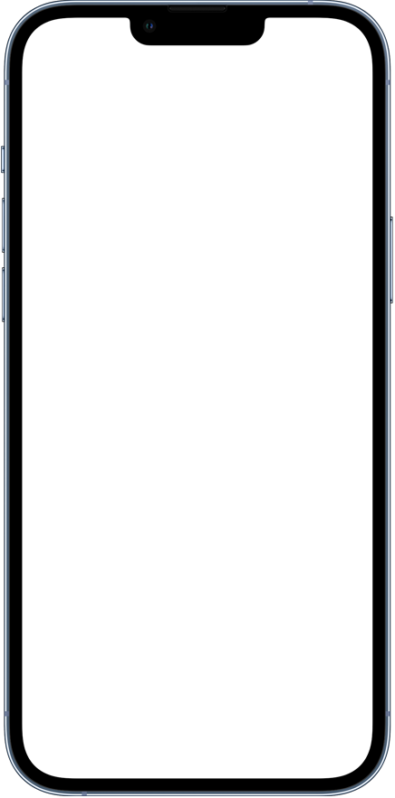

사상 최대 규모의 업그레이드를 거친 Apple의 프로급 카메라 시스템. 훨씬 더 많은 디테일을 포착하는 차원이 다른 하드웨어, 새로운 사진 및 영화 촬영 기법을 구현하는 놀랄 만큼 똑똑한 소프트웨어, 그리고 이 모든 걸 가능케 하는 압도적으로 빠른 칩까지. 당신이 촬영하는 방식까지 바꿔놓을 카메라, 지금 만나보세요.

Smart HDR 4 optimizes each part of the scene
Neural Engine의 머신 러닝 성능을 활용하는 스마트 HDR 4는 이제 한 장면 속에 등장하는 각 인물에 저마다 적절한 효과를 더해줍니다. 게다가 Apple의 소프트웨어와 ISP가 각 인물의 명암비, 조명, 피부 톤을 자동으로 보정해주기 때문에 사진 속 누구나 할 것 없이 모두 멋지죠.
Super Retina XDR
iPhone 13의 OLED 디스플레이는 무려 28%, 즉 최대 800 니트까지 더 밝은 빛을 낼 수 있습니다. 덕분에 쨍한 햇빛 아래에서도 더 잘 보이죠. 그리고 HDR 콘텐츠 재생 시에는 여전히 밝기 최대 1200 니트까지 올라갑니다. 결과 밝은 화이트, 진정한 블랙 그리고 그 사이의 모든 음영까지 또렷하게 볼 수 있습니다. 훨씬 좋아진 전력 효율로 배터리까지 절약해준답니다.
더 선명하고, 디테일이
살아있는 사진 및
동영상
